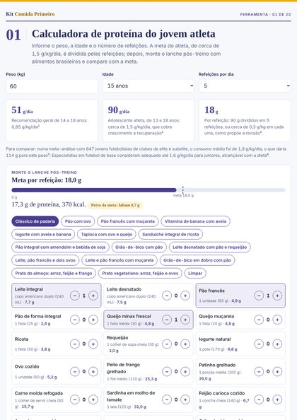
01
Calculadora de proteína
Meta do dia e de cada refeição pelo peso, pela idade e pelo número de refeições, com um montador de lanche pós-treino em medidas caseiras da tabela brasileira.
Ferramenta interativa
42º Congresso Brasileiro de Pediatria · Belo Horizonte · outubro de 2026
Vinte materiais para levar a aula “Creatina e Whey Protein: modismo inadequado” ao consultório: ferramentas para a consulta, fichas de referência, materiais para as famílias e recursos para o ensino.
Todos os PDFs, a carta em Word, o carrossel e as ferramentas, que também funcionam sem internet.
Para usar na tela, durante a consulta ou na sala de espera.

01
Meta do dia e de cada refeição pelo peso, pela idade e pelo número de refeições, com um montador de lanche pós-treino em medidas caseiras da tabela brasileira.
Ferramenta interativa
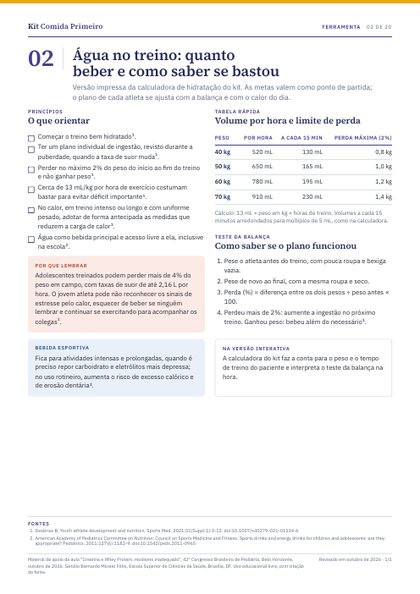
02
Volume por hora e a cada 15 minutos, e o teste da balança que mostra se o plano funcionou.
Ferramenta e PDF A4 · 1 página
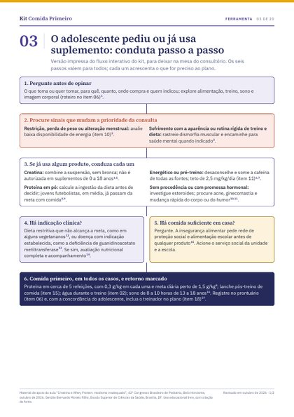
03
Seis passos para o adolescente que pediu ou já usa suplemento, com resumo pronto para o prontuário.
Ferramenta e PDF A4 · 2 páginas
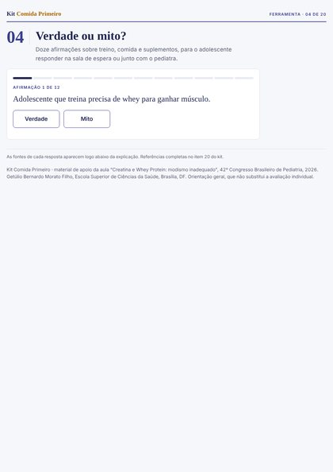
04
Doze afirmações para o adolescente responder na sala de espera, cada uma com explicação e fonte.
Ferramenta interativa
Material de consulta rápida, para ter à mão no consultório.
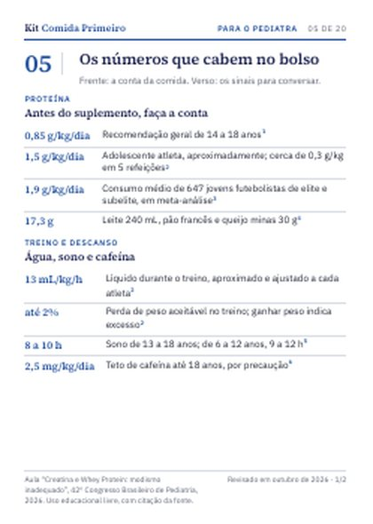
05
Os números da consulta em tamanho A6: proteína, água, sono, cafeína e os sinais que pedem conversa.
PDF A6 · 2 páginas
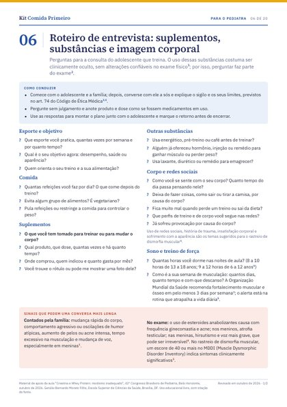
06
Perguntas sobre suplementos, substâncias e imagem corporal, com modelo de registro no prontuário.
PDF A4 · 2 páginas
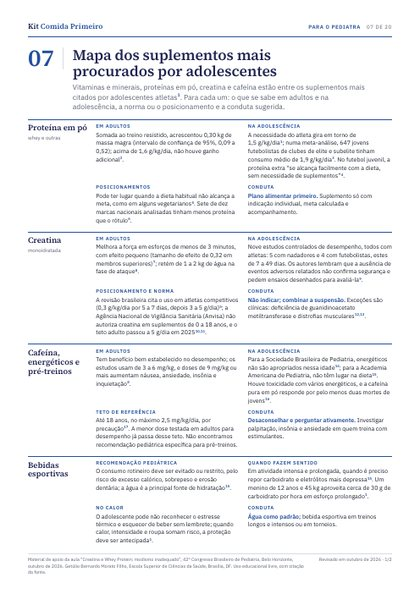
07
Proteína, creatina, cafeína, bebidas esportivas, vitaminas e minerais: o que se sabe em adultos e na adolescência, a norma e a conduta.
PDF A4 · 2 páginas
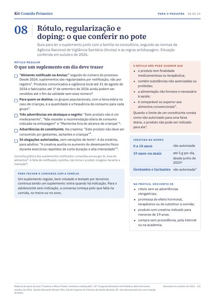
08
O que conferir no pote segundo a Agência Nacional de Vigilância Sanitária, o que já se encontrou dentro dos potes e as regras antidopagem.
PDF A4 · 2 páginas
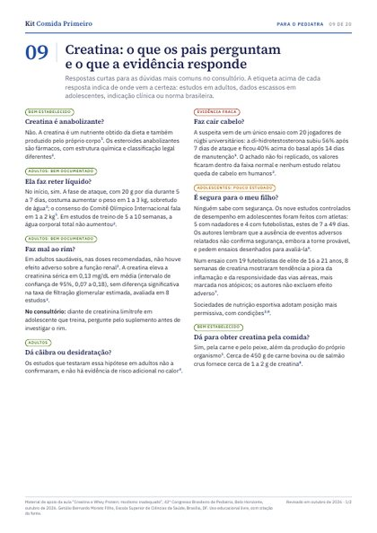
09
Respostas curtas às dúvidas mais comuns, cada uma marcada pelo grau de certeza da evidência.
PDF A4 · 2 páginas
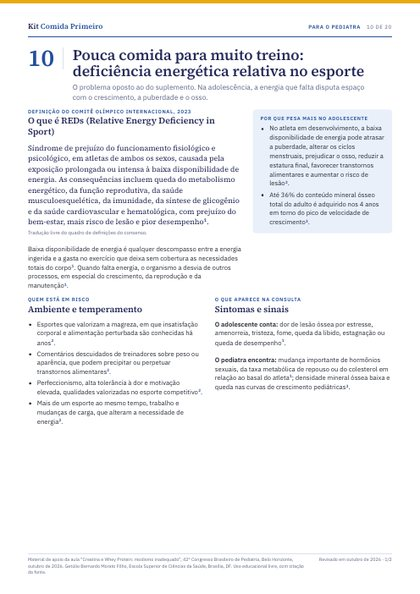
10
O problema oposto ao do suplemento: definição do Comitê Olímpico Internacional, sinais, rastreio e prevenção.
PDF A4 · 2 páginas
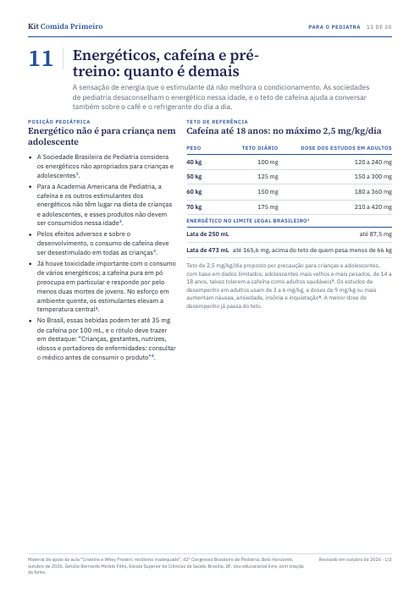
11
Teto de cafeína por peso, limite legal brasileiro das bebidas e uma tabela para somar todas as fontes do dia.
PDF A4 · 2 páginas
Para entregar, afixar ou publicar, em linguagem leiga.
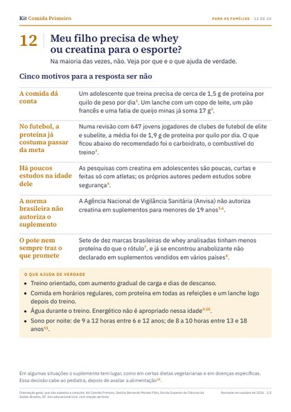
12
Cinco motivos para a resposta costumar ser não, ideias de lanche e perguntas para levar à consulta.
PDF A4, frente e verso · 2 páginas
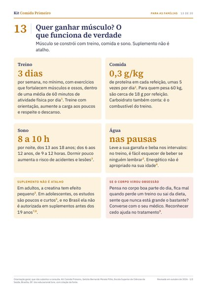
13
Treino, comida, sono e água em linguagem direta, com a conta de proteína de um dia comum.
PDF A4, frente e verso · 2 páginas
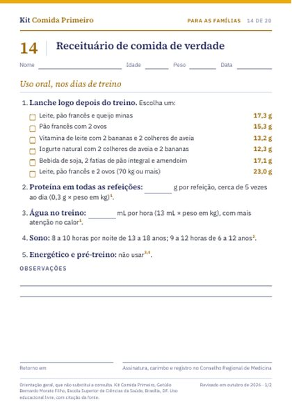
14
Prescrição em A5 com lanches pós-treino e metas por peso; no verso, a proteína dos alimentos em medidas de casa.
PDF A5, frente e verso · 2 páginas
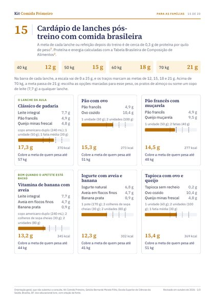
15
Quinze lanches e refeições com comida brasileira, cada um com proteína, energia e a meta que cobre.
PDF A4 · 3 páginas
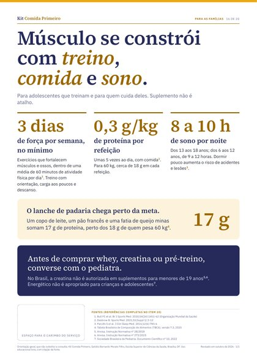
16
Treino, comida e sono em tamanho A3, com espaço para o carimbo do serviço.
PDF A3 · 1 página
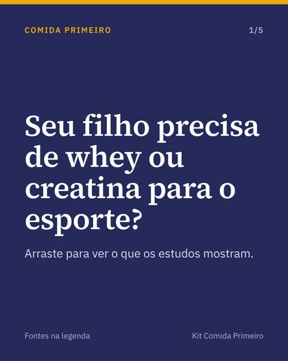
17
Cinco cartões de 1080 × 1350 com legenda e fontes, e uma versão editável para incluir nome e registros profissionais antes de publicar.
PNG, legenda e versão editável
Para escrever ao treinador, discutir casos e ir às fontes.
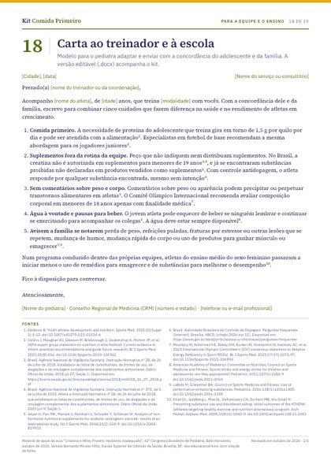
18
Modelo para adaptar e enviar com a concordância do adolescente e da família.
PDF A4 e Word · 1 página
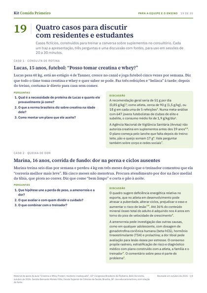
19
Quatro casos fictícios com perguntas, discussão comentada e roteiro para sessões de 30 minutos.
PDF A4 · 3 páginas
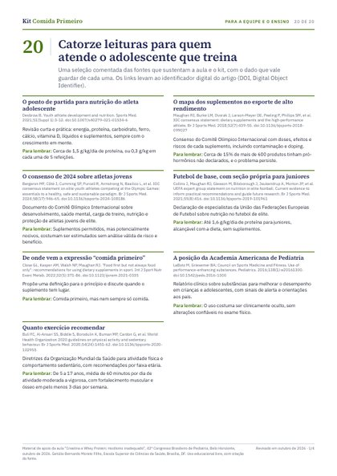
20
Catorze leituras comentadas e a lista completa das referências do kit, com os links de cada artigo.
PDF A4 · 4 páginas